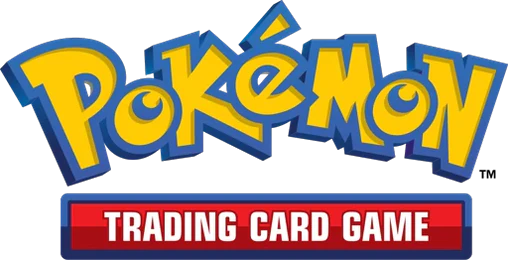
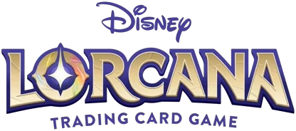
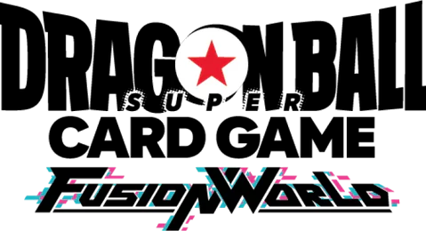
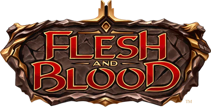
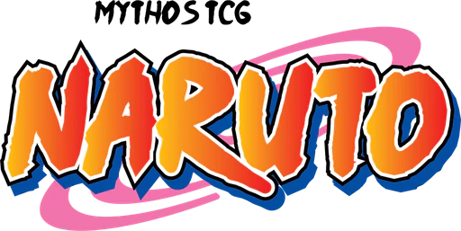
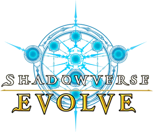
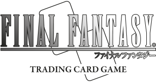
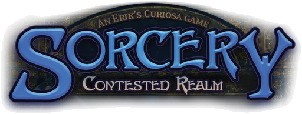

Escolha um jogo
-

Pokémon TCG - Magic: The Gathering
- One Piece Card Game
- Naruto Card Game (2027)
- Gundam Card Game
- Riftbound
- Yu-Gi-Oh!
-

Disney Lorcana - Union Arena
-

Dragon Ball Fusion World - Cyberpunk TCG
- Star Wars: Unlimited
-

Flesh and Blood - Digimon Card Game
- Cardfight!! Vanguard
- Duel Masters
- Weiß Schwarz
- hololive Official Card Game
- Palworld Official Card Game
- Grand Archive TCG
Outros TCGs
-

Naruto Mythos TCG - Naruto Kayou
- Dragon Ball Super Card Game Masters
-

Shadowverse: Evolve -

Final Fantasy TCG -

Sorcery: Contested Realm - Godzilla Card Game
Mais jogos em breve